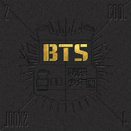

Lista de álbuns
O!RUL8,2?
Lançado em 11 de setembro de 2013

Faixas do álbum
Intro:O!RUL8,2?
N.O.
We On
Skit: R U Happy Now?
If I Ruled The World
Coffee
BTS Cypher Pt.1
The Rise of Bangtan
Satoori Rap
Outro: Luv in Skool
2 Cool 4 Skool
Lançado em 13 de junho de 2013

Faixas do álbum
Intro: 2 Cool 4 Skool
We Are Bulletproof (Part 2)
Skit: Circle Room Talk
No More Dream
Interlude
I Like It
Outro: Circle Room Cypher
Dark & Wild
Lançado em 19 de agosto de 2014

Faixas do álbum
INTRO (BTS) Dark & Wild
Danger
Hormone War
Hip Hop Lover
Let Me Know
Rain
BTS Cypher PT.3 : KILLER (ft.Supreme Boi)
Interlude : What Are You Doing?
Can You Turn Off Your Phone
Blanket Kick
24/7 = Heaven
Look Here
Second Grade
Outro: Does That Make Sense?
Skool Luv Affair
Lançado em 12 de fevereiro de 2014
Faixas do álbum
Intro: Skool Luv Affair
Boy In Luv
Skit: Soulmate
Where You From
Just One Day
Tomorrow
BTS Cypher pt.2 Triptych
Spine Breaker
Jump
Outro: Propose
Skool Luv Affair (Special Edition)
Lançado em 14 de maio de 2014
Faixas do álbum
Miss Right
I Like It (Slow Jam Remix)
Intro: Skool Luv Affair
Boy In Luv
Skit: Soulmate
Where You From
Just One Day
Tomorrow
Bts Cypher pt. 2 Triptych
Spine Breaker
Jump
Outro: Propose
In The Mood Of Love pt.1
Lançado em 2015

Faixas do álbum
Intro: Mood For Love
I need you
Hold Me Tight
SKIT: Expectation!
Dope
Fun Boys / Btsdiss
Converse High
Move
Outro: Love Is Not Over
The Most Beautiful Moment In Life pt.2
Lançado em 30 de novembro de 2015
.jpg)
Faixas do álbum
Intro: Never Mind
Run
Butterfly
Whalien 52
My city
Baepsae
SKIT: One night in a strange city
Dead Leaves
Outro: House Of Cards
The Most Beautiful Moment In Life: Young Forever
Lançado em 2 de maio de 2016
Faixas do álbum
Compilado de todas as faixas do álbum
Wings
Lançado em 10 de outubro de 2016
Faixas do álbum
BTS (방탄소년단) WINGS 'Boy Meets Evil' Comeback Trailer
Blood Sweat & Tears
Begin
Lie
Stigma
First Love
Reflection
MAMA
Awake
Lost
Cypher 4
Am I Wrong
21st Century Girl
2! 3!
Interlude : Wings
You Never Walk Alone
Lançado em 13 de fevereiro de 2017

Faixas do álbum
BTS (방탄소년단) WINGS 'Boy Meets Evil' Comeback Trailer
Blood Sweat & Tears
Begin
Lie
Stigma
First Love
Reflection
MAMA
Awake
Lost
Cypher 4
Am I Wrong
21st Century Girl
2! 3! (Hoping For More Good Days)
Spring Day
Not Today
Outro : Wings
A Supplementary Story : You Never Walk Alone
Love Yourself 承 'Her'
Lançado em 18 de setembro de 2017

Faixas do álbum
Intro : Serendipity
DNA
Best of Me
Dimple
Pied Piper
Skit : Billboard Music Awards Speech
Mic Drop
Go Go
Outro:Her
Love Yourself 轉 'Tear'
Lançado em 18 de setembro de 2017
Faixas do álbum
Intro : Singularity
Fake Love
The Truth Untold (Feat. Steve Aoki)
134340
Paradise
Love Maze
Magic Shop
Airplane pt.2
Anpanmam
So What
Outro: Tear
Love Yourself 結 'Answer
Lançado em 24 de agosto de de 2018

Faixas do álbum
Compilado de todas as faixas do álbum
Map of the Soul: Persona
Lançado em 12 de abril de de 2019

Faixas do álbum
Intro : Persona
작은 것들을 위한 시 (Boy with Luv) feat. Halsey
소우주 (Mikrokosmos)
Make It Right
Home
Jamais Vu
Dionysus
BTS World: Original Soundtrack
Lançado em 28 de junho de de 2019
Faixas do álbum
Compilado de todas as faixas do álbum
Map of the Soul: 7
Lançado em 21 de fevereiro de de 2020
Faixas do álbum
Compilado de todas as faixas do álbum
BE
Lançado em 20 de novembro de de 2020

Faixas do álbum
Life Goes On
Fly To My Room (내 방을 여행하는 법)
Blue & Grey
Skit
Telepathy (잠시)
Dis-Ease (병)
Stay
Dynamite
Voltar para a página inicial.